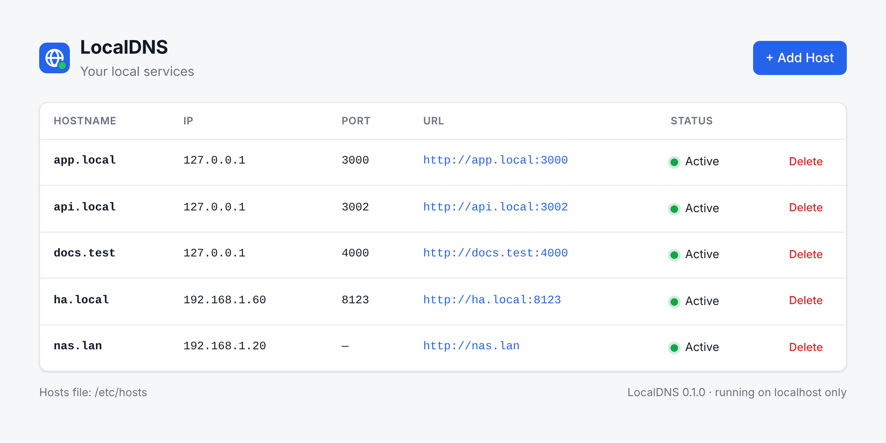

macOS · Linux · Windows · one small binarymacOS · Linux · Windows · ملف تنفيذي واحد صغير
Friendly names for your local servicesأسماء سهلة لخدماتك المحلية
Turn 127.0.0.1:3000 into http://app.local with a single command, no port to type. Locly writes only its own section of your hosts file, and a small router on 127.0.0.1 drops the port. No DNS server, nothing else on your system changes.حوّل 127.0.0.1:3000 إلى http://app.local بأمر واحد، بدون كتابة رقم المنفذ. يكتب Locly في قسمه الخاص فقط من ملف hosts، وموجّه صغير على 127.0.0.1 يستغني عن المنفذ. بلا خادم DNS، ولا يتغيّر أي شيء آخر في نظامك.
Built for developers and AI agents: a scriptable CLI with JSON output, plus a simple web UI.مصمَّم للمطورين ولوكلاء الذكاء الاصطناعي: واجهة أوامر قابلة للأتمتة بمخرجات JSON، وواجهة ويب بسيطة.
$curl -fsSL https://github.com/Devehab/Locly-DNS/releases/latest/download/install.sh | sh
Instead of memorizing IP addresses and ports, pick a name you like and use it right away. No domain to register, no DNS to link, no waiting.بدل أن تحفظ عناوين IP وأرقام المنافذ، اختر اسمًا يعجبك واستخدمه فورًا. بلا حجز دومين، وبلا ربط DNS، وبلا انتظار.
Animation: scattered numbers like 127.0.0.1:3000 and 192.168.1.60:8123 turn into names you choose, such as app.local and ha.local. Registering a domain, linking DNS records and waiting for propagation are all crossed off as not needed. One command, localdns add app.local 127.0.0.1:3000, makes http://app.local open in the browser, no port needed. Names are then added from the terminal and removed from the web UI, and both stay in sync.رسوم متحركة: أرقام متناثرة مثل 127.0.0.1:3000 و192.168.1.60:8123 تتحول إلى أسماء تختارها مثل app.local وha.local. حجز الدومين وربط سجلات DNS وانتظار الانتشار كلها تُشطب لأنها غير مطلوبة. أمر واحد، localdns add app.local 127.0.0.1:3000، يجعل http://app.local يفتح في المتصفح بدون رقم منفذ. ثم تُضاف الأسماء من الطرفية وتُحذف من واجهة الويب، ويبقى الاثنان متزامنين.
Still memorizing these?ما زلت تحفظ هذه الأرقام؟
IPs, ports and sticky notes everywhere.عناوين IP وأرقام منافذ وملاحظات لاصقة في كل مكان.
Give them names you chooseسمِّها بأسماء تختارها أنت
Names you remember the first time.أسماء تتذكرها من أول مرة.
127.0.0.1:3000app.local
127.0.0.1:8080
192.168.1.60:8123ha.local
10.0.0.5:9000
127.0.0.1:3002api.local
127.0.0.1:5173
172.17.0.2:5432
192.168.1.20:32400
127.0.0.1:3000127.0.0.1:3002192.168.1.60:8123
No registering. No linking. No waiting.بلا حجز. بلا ربط. بلا انتظار.
Register a domainحجز دومين$12/yr + renewals12 دولارًا سنويًا + التجديد
Not neededلا حاجة
Link DNS recordsربط سجلات DNS
A · CNAME · TTL
Not neededلا حاجة
Wait for propagationانتظار الانتشارminutes… or hoursدقائق… أو ساعات
Not neededلا حاجة
Locly maps the name on your own machine, instantly.يربط Locly الاسم على جهازك أنت، فورًا.
One command. Done.أمر واحد… وانتهى.
Type the name and the address, then open the link.اكتب الاسم والعنوان، ثم افتح الرابط.
$
✓ Added successfully
app.local → 127.0.0.1:3000
URL: http://app.local
http://
My App● running on app.local
Hello from app.local
Add, list, remove. Or just click.أضف، اعرض، احذف… أو انقر فقط.
The terminal and the web UI share one core, so every change shows up in both.الطرفية وواجهة الويب تعملان على القلب نفسه، فيظهر كل تغيير في الاثنتين.
In the terminalمن الطرفية
$
✓ Added successfully
$
app.local127.0.0.1:3000✓
ha.local192.168.1.60:8123✓
docs.test127.0.0.1:4000✓
In the web UIمن واجهة الويب
LocalDNS+ Add Host
app.local127.0.0.1:3000Delete
api.local127.0.0.1:3002Delete
ha.local192.168.1.60:8123Delete
docs.test127.0.0.1:4000Delete
Delete api.local?CancelDelete
Locly
Remember names, not numbers.احفظ أسماء، لا أرقام.
$curl -fsSL …/install.sh | sh
One-line install · macOS · Linux · Windowsتثبيت بسطر واحد · macOS · Linux · Windows
github.com/Devehab/Locly-DNS
Adding and managing names is this easyإضافة الأسماء وإدارتها بهذه السهولة
1
Add a nameأضف اسمًا
Choose any local name and point it at an IP, with or without a port. One command, or + Add Host in the web UI.اختر أي اسم محلي ووجّهه إلى عنوان IP، مع منفذ أو بدونه. أمر واحد، أو زر + Add Host في واجهة الويب.
$localdns add app.local 127.0.0.1:3000
2
See everythingاعرض كل شيء
Every name with its address, full URL and live status, in the terminal, as JSON, or on the dashboard.كل اسم مع عنوانه ورابطه الكامل وحالته المباشرة، في الطرفية أو بصيغة JSON أو في لوحة التحكم.
$localdns list
3
Change or removeعدّل أو احذف
Point a name somewhere new with --force, or remove it. Deleting always asks first, and nothing else on your system is touched.وجّه الاسم إلى عنوان جديد بـ --force، أو احذفه. الحذف يطلب التأكيد دائمًا، ولا يُمس أي شيء آخر في نظامك.
$localdns remove app.local
How it worksكيف يعمل
Your hosts file, done rightملف hosts، بالطريقة الصحيحة
Your operating system already checks the hosts file before asking DNS. Locly simply manages one clearly marked block in that file, and never touches anything else.نظام التشغيل يقرأ ملف hosts قبل أن يسأل خوادم DNS. كل ما يفعله Locly هو إدارة قسم واحد واضح ومحدَّد داخل هذا الملف، ولا يلمس أي شيء آخر.
1
Add a nameأضف اسمًا
Tell Locly which name points to which address. The port is optional.أخبر Locly أي اسم يشير إلى أي عنوان. رقم المنفذ اختياري.
$localdns add app.local 127.0.0.1:3000
2
Locly writes one lineيكتب Locly سطرًا واحدًا
Inside its own # BEGIN LOCALDNS block. The port is kept in Locly's config, because hosts files can't store ports.داخل قسمه الخاص # BEGIN LOCALDNS. ويحفظ رقم المنفذ في إعداداته، لأن ملف hosts لا يدعم المنافذ.
127.0.0.1 app.local
3
Open itافتحه
Your browser now reaches the service by name, without the port: Locly's router on 127.0.0.1:80 forwards app.local to port 3000. Every other name, google.com included, keeps using your normal DNS.يصل متصفحك الآن إلى الخدمة باسمها وبدون رقم المنفذ: موجّه Locly على 127.0.0.1:80 يحوّل app.local إلى المنفذ 3000. وكل الأسماء الأخرى، ومنها google.com، تبقى على DNS المعتاد.
http://app.local
/etc/hosts
127.0.0.1 localhost255.255.255.255 broadcasthost::1 localhost10.0.0.5 nas.home.arpa# BEGIN LOCALDNS127.0.0.1 app.local127.0.0.1 api.local# END LOCALDNS
Your entries: never modifiedمدخلاتك: لا تُعدَّل أبدًاManaged by Loclyيديره Locly
A name Locly managesاسم يديره Locly
app.localhosts file · Locly blockملف hosts · قسم Locly127.0.0.1:3000 ✓
Everything elseكل ما عدا ذلك
google.comnot in the blockليس في القسمyour normal DNSDNS المعتاد
Not in the block? Locly isn't involved at all. It never answers DNS queries and never intercepts traffic.ليس في القسم؟ لا يتدخل Locly إطلاقًا. فهو لا يجيب على استعلامات DNS ولا يعترض أي حركة مرور.
Web UIواجهة الويب
Prefer clicking? There's a web UIتفضّل النقر؟ هناك واجهة ويب
Run localdns ui and it opens http://127.0.0.1:7357 in your browser. Add and delete hosts, and see IPs, ports, URLs and status at a glance. It's built into the binary (no Node.js or Python) and listens on localhost only.شغّل localdns ui وسيفتح http://127.0.0.1:7357 في متصفحك. أضف الأسماء واحذفها، وشاهد العناوين والمنافذ والروابط والحالة بنظرة واحدة. الواجهة مدمجة في البرنامج نفسه (بلا Node.js أو Python) وتعمل على localhost فقط.
It will ask for your password. Adding or deleting names edits /etc/hosts, which only an administrator can change, so on macOS and Linux the UI asks for sudo when it starts. Only the UI server runs with sudo, and Ctrl+C stops it completely. Want view-only? localdns ui --no-elevate.ستُطلب منك كلمة المرور. إضافة الأسماء أو حذفها تعدّل /etc/hosts، ولا يغيّره إلا المسؤول، لذلك تطلب الواجهة sudo عند تشغيلها على macOS وLinux. خادم الواجهة وحده يعمل بـ sudo، و Ctrl+C يوقفه تمامًا. تريد العرض فقط؟ localdns ui --no-elevate.
127.0.0.1:7357

Add Host with instant validationإضافة اسم مع تحقق فوري
Delete always asks firstالحذف يطلب التأكيد دائمًا
Live status for every entryحالة مباشرة لكل اسم
Light and dark modeوضع فاتح وداكن
Examplesأمثلة
One format for everythingصيغة واحدة لكل شيء
The format is always localdns add <hostname> <ip[:port]>.الصيغة دائمًا هي localdns add <hostname> <ip[:port]>.
A local web appتطبيق ويب محلي
$localdns add app.local 127.0.0.1:3000
http://app.local
A backend APIواجهة API خلفية
$localdns add api.local 127.0.0.1:3002
http://api.local
A device on your networkجهاز على شبكتك
$localdns add ha.local 192.168.1.60:8123
http://ha.local:8123Home Assistant
No port neededبدون منفذ
$localdns add nas.lan 192.168.1.20
http://nas.lan
Change an existing nameتعديل اسم موجود
$localdns add app.local 127.0.0.1:4000 --force
Updated successfully
IPv6 works tooيدعم IPv6 أيضًا
$localdns add v6.test [::1]:8080
http://v6.test:8080
Remove when you're doneاحذف عندما تنتهي
People get a confirmation question. Scripts and agents pass --yes.يظهر للمستخدم سؤال تأكيد، بينما تمرّر السكربتات والوكلاء الخيار --yes.
Open a new terminal with “Run as administrator” and check that it works:افتح طرفية جديدة بخيار «تشغيل كمسؤول» وتأكد أنه يعمل:
PS>localdns info
Add your first name:أضف أول اسم:
PS>localdns add app.local 127.0.0.1:3000
Administrator rights: only changing the hosts file needs them. On macOS and Linux, localdns asks for sudo for that single command and then exits. On Windows, use a terminal opened with “Run as administrator”. Reading (list, status, info, doctor) never needs them.صلاحيات المسؤول: لا يحتاجها إلا تعديل ملف hosts. على macOS وLinux يطلب localdns صلاحية sudo لذلك الأمر وحده ثم ينتهي. وعلى Windows استخدم طرفية مفتوحة بخيار «تشغيل كمسؤول». أوامر القراءة (list وstatus وinfo وdoctor) لا تحتاجها أبدًا.
Command guideدليل الأوامر
Eight commands. That's the whole tool.ثمانية أوامر. هذه هي الأداة كلها.
Every command supports --help and --json. Start with localdns info.كل أمر يدعم --help و--json. ابدأ بالأمر localdns info.
Show all commands, flags and exit codesعرض كل الأوامر والخيارات ورموز الخروج
add
localdns add <hostname> <ip[:port]>
Map a local hostname to an IP on this machine or your network. Adding the same entry twice changes nothing; use --force to change an existing one.يربط اسمًا محليًا بعنوان IP على جهازك أو شبكتك. إضافة المدخل نفسه مرتين لا تغيّر شيئًا، واستخدم --force لتعديل مدخل موجود.
--force
Replace an entry that points somewhere elseاستبدال مدخل يشير إلى عنوان آخر
--json
Print the result as JSONطباعة النتيجة بصيغة JSON
--no-elevate
Never ask for sudo automaticallyعدم طلب sudo تلقائيًا
Show every managed name with its address and status: active, missing (the line was deleted by hand) or conflict (another line overrides it).يعرض كل الأسماء المُدارة مع العنوان والحالة: active (نشط)، أو missing (حُذف السطر يدويًا)، أو conflict (سطر آخر يتجاوزه).
--json
hostname, ip, port, url and status for each entryالاسم والعنوان والمنفذ والرابط والحالة لكل مدخل
localdns list
localdns list --json
remove
localdns remove <hostname>
Remove a managed name. Asks [y/N] first unless you pass --yes. Entries Locly didn't create are never touched.يحذف اسمًا مُدارًا. يسأل [y/N] أولًا إلا إذا مرّرت --yes. ولا يلمس أبدًا مدخلات لم يُنشئها Locly.
-y, --yes
Don't ask for confirmationبدون سؤال تأكيد
--json
Print the removed entry as JSONطباعة المدخل المحذوف بصيغة JSON
Shows where the hosts file and config live, whether you can write to them, and the health of each entry.يعرض مكان ملف hosts وملف الإعدادات، وهل يمكنك الكتابة فيهما، وحالة كل مدخل.
--json
Includes healthy, writable and countsيتضمن healthy وwritable والأعداد
localdns status
localdns status --json
doctor
localdns doctor
Runs eight checks (OS, hosts file found, readable and writable, Locly section, config, UI port, port-free router) and prints a fix for anything wrong.يُجري ثمانية فحوصات (النظام، ووجود ملف hosts وإمكانية قراءته والكتابة فيه، وقسم Locly، والإعدادات، ومنفذ الواجهة، وموجّه الروابط بدون منفذ) ويطبع طريقة الإصلاح لأي مشكلة.
✓ Operating system supported
✓ Hosts file found
✓ Hosts file readable
✓ Hosts file writable
✓ LocalDNS section valid
✓ Configuration valid
✓ Local UI available
✓ Port-free URLs (router)
Everything looks good.
ui
localdns ui
Starts the web interface on http://127.0.0.1:7357 (localhost only) and opens it in your browser. Because adding and deleting edits /etc/hosts, it asks for your password (sudo) on macOS and Linux; only the UI runs with sudo, and Ctrl+C stops everything.يشغّل واجهة الويب على http://127.0.0.1:7357 (على localhost فقط) ويفتحها في متصفحك. ولأن الإضافة والحذف يعدّلان /etc/hosts، يطلب كلمة المرور (sudo) على macOS وLinux؛ الواجهة وحدها تعمل بـ sudo، و Ctrl+C يوقف كل شيء.
--port <port>
Use another port (default 7357)استخدام منفذ آخر (الافتراضي 7357)
--no-open
Don't open the browserبدون فتح المتصفح تلقائيًا
--no-elevate
Read-only, never ask for sudoللقراءة فقط، بدون طلب sudo
The hosts file can't store ports, so http://app.local would go to port 80. The router listens there, on 127.0.0.1 only, and forwards each of your names to its port. It never runs as root (on macOS, the system opens the port and hands it to the router running as the restricted nobody user), starts on its own, and serves only names you added. The installer turns it on.ملف hosts لا يحفظ المنافذ، لذا فإن http://app.local يذهب إلى المنفذ 80. الموجّه يستمع هناك، على 127.0.0.1 فقط، ويحوّل كل اسم من أسمائك إلى منفذه. لا يعمل أبدًا بصلاحيات root (على macOS يفتح النظام المنفذ ويسلّمه للموجّه الذي يعمل بصلاحيات المستخدم المقيّد nobody)، ويبدأ تلقائيًا، ولا يخدم إلا الأسماء التي أضفتها. المثبِّت يفعّله تلقائيًا.
enable
Start it now and on its own from then onتشغيله الآن وتلقائيًا بعد ذلك
Removes Locly's hosts entries, its configuration, the router and the binary. Your other hosts entries are not modified.يحذف مدخلات Locly من ملف hosts وإعداداته والموجّه والبرنامج نفسه. مدخلاتك الأخرى في ملف hosts لا تتغيّر.
-y, --yes
Don't ask for confirmationبدون سؤال تأكيد
--keep-binary
Keep the localdns programالإبقاء على برنامج localdns
localdns uninstall
localdns uninstall --yes
info
localdns info
An overview of every command, flag, exit code and file location. The best starting point for people and AI agents alike.نظرة شاملة على كل الأوامر والخيارات ورموز الخروج وأماكن الملفات. أفضل نقطة بداية للبشر ولوكلاء الذكاء الاصطناعي على حد سواء.
localdns info
localdns info --json
localdns add --help
Flags for every commandخيارات لكل الأوامر
--json
Machine-readable output, errors includedمخرجات قابلة للقراءة آليًا، ومنها الأخطاء
-h, --help
Help for the commandمساعدة للأمر
--no-color
Plain output (or set NO_COLOR)مخرجات بلا ألوان (أو اضبط NO_COLOR)
--hosts-file
Use another hosts file (tests, CI)استخدام ملف hosts آخر (للاختبار وCI)
--config-dir
Use another config folderاستخدام مجلد إعدادات آخر
Exit codesرموز الخروج
0
Successنجاح
1
Unexpected error, or doctor found a problemخطأ غير متوقع، أو وجد doctor مشكلة
2
Invalid usage or inputاستخدام أو مدخلات غير صحيحة
3
Hostname not foundالاسم غير موجود
4
Conflict: exists, or defined outside Loclyتعارض: موجود مسبقًا، أو معرَّف خارج Locly
5
Administrator rights requiredتلزم صلاحيات المسؤول
6
Hosts section or config is invalidقسم hosts أو الإعدادات غير صالحة
7
Not confirmed (or --yes missing without a terminal)لم يتم التأكيد (أو غياب --yes بدون طرفية)
Allowed names. Only suffixes reserved for local use are accepted, so Locly can never override a real internet domain:الأسماء المسموحة. يقبل Locly فقط اللواحق المخصصة للاستخدام المحلي، لذلك لا يمكنه أبدًا تجاوز نطاق حقيقي على الإنترنت:
Allowed addresses. Loopback (127.0.0.0/8, ::1), private networks (10/8, 172.16/12, 192.168/16, fc00::/7), link-local, and 100.64/10 (e.g. Tailscale). Ports 1–65535 are optional.العناوين المسموحة. عناوين الجهاز نفسه (127.0.0.0/8 و::1)، والشبكات الخاصة (10/8 و172.16/12 و192.168/16 وfc00::/7)، وعناوين link-local، و100.64/10 (مثل Tailscale). والمنفذ (1–65535) اختياري.
AI agentsوكلاء الذكاء الاصطناعي
Made for AI agents, tooمصمَّم لوكلاء الذكاء الاصطناعي أيضًا
Claude Code, Codex, OpenCode, Cursor: any agent can drive Locly without a GUI and without interactive prompts.يستطيع Claude Code وCodex وOpenCode وCursor، وأي وكيل آخر، التحكم بـ Locly دون واجهة رسومية ودون أسئلة تفاعلية.
Discoverableقابل للاكتشاف
localdns info --json describes every command, flag and exit code.الأمر localdns info --json يصف كل أمر وخيار ورمز خروج.
Machine-readableمخرجات آلية
--json on every command, errors included. No scraping.--json متاح في كل أمر، ومنها الأخطاء، دون الحاجة لتحليل النصوص.
Never hangsلا يتوقف بانتظار إدخال
Without a terminal, confirmations fail fast with exit code 7 unless --yes is given.بدون طرفية، يفشل طلب التأكيد فورًا برمز الخروج 7 إلا إذا مُرِّر --yes.
Idempotent and predictableآمن عند التكرار ومتوقَّع
Repeating add is safe, and exit codes are stable.تكرار add آمن، ورموز الخروج ثابتة.
agent session
$ localdns info --json
$ localdns add api.local 127.0.0.1:3002 --json
{
"action": "added",
"entry": {
"hostname": "api.local",
"ip": "127.0.0.1",
"port": 3002,
"address": "127.0.0.1:3002",
"url": "http://api.local:3002",
"status": "active"
}
}
$ localdns add google.com 127.0.0.1 --json # exit 2
{
"error": {
"code": "invalid_input",
"message": "google.com is not a local hostname",
"hint": "LocalDNS only manages local hostnames …"
}
}
$ localdns remove api.local --yes --json
Securityالأمان
Secure by designآمن من الأساس
Locly manages local hostname mappings on this machine. Nothing more.يدير Locly ربط الأسماء المحلية على هذا الجهاز فقط. لا أكثر.
No DNS serverليس خادم DNS
It never answers DNS queries. Your OS resolves names, as always.لا يجيب على استعلامات DNS أبدًا، فنظام التشغيل هو من يترجم الأسماء كالمعتاد.
No root daemonلا خدمة بصلاحيات root
Only the one command that edits the hosts file is elevated, and then it exits.الأمر الذي يعدّل ملف hosts وحده يعمل بصلاحيات مرتفعة، ثم ينتهي.
Nothing open to your networkلا شيء مكشوف لشبكتك
The UI and the optional port-free router bind to 127.0.0.1 only. The UI has DNS-rebinding and CSRF protection; the router serves only names you added.الواجهة والموجّه الاختياري مربوطان بـ 127.0.0.1 فقط. الواجهة محمية من DNS rebinding وCSRF، والموجّه لا يخدم إلا الأسماء التي أضفتها.
No telemetryبلا تتبّع
No analytics, no outbound requests. Your data never leaves your machine.لا تحليلات ولا طلبات خارجية. بياناتك لا تغادر جهازك أبدًا.
No network changesلا تغييرات على الشبكة
No router, DNS, VPN, proxy or firewall changes. No traffic interception.لا تعديل على الراوتر أو DNS أو VPN أو البروكسي أو الجدار الناري، ولا اعتراض لحركة المرور.
No edits outside its blockلا تعديل خارج قسمه
Lines outside # BEGIN/END LOCALDNS are preserved byte for byte.الأسطر خارج # BEGIN/END LOCALDNS تبقى كما هي حرفيًا.
No internet domainsلا نطاقات إنترنت
google.com can't be mapped, so real domains always use normal DNS.لا يمكن ربط google.com، لذا تستخدم النطاقات الحقيقية DNS المعتاد دائمًا.
No unverified installsلا تثبيت دون تحقق
The installer checks SHA-256 checksums before copying anything.يتحقق المثبِّت من بصمات SHA-256 قبل نسخ أي شيء.
Enforced by tests, not promisesمضمون بالاختبارات، لا بالوعود
An architecture test fails if the core ever imports networking or process-execution packages. Another audits the source code to make sure the only listeners are the UI and the router, both on 127.0.0.1. CI proves that existing hosts entries survive every operation on macOS, Linux and Windows, without ever touching the runner's real hosts file.يفشل اختبار معماري إذا استورد قلب البرنامج أي مكتبة شبكات أو تشغيل عمليات. واختبار آخر يفحص الشيفرة للتأكد من أن المستمعَين الوحيدَين هما الواجهة والموجّه، وكلاهما على 127.0.0.1. ويثبت CI أن مدخلات hosts الموجودة تبقى سليمة بعد كل عملية على macOS وLinux وWindows، دون أن يلمس ملف hosts الحقيقي لجهاز الاختبار.
This page too: no cookies, no trackers, no third-party scripts or fonts.وهذه الصفحة أيضًا: بلا ملفات تعريف ارتباط، وبلا متتبّعات، وبلا سكربتات أو خطوط من أطراف خارجية.
FAQأسئلة شائعة
Questions, answeredإجابات لأسئلتك
Is Locly a DNS server?هل Locly خادم DNS؟
No. It edits a clearly marked block in your hosts file, which your operating system already reads before DNS. Nothing listens on port 53.لا. هو يعدّل قسمًا محددًا في ملف hosts الذي يقرؤه نظام التشغيل أصلًا قبل DNS. ولا شيء يستمع على المنفذ 53.
Why can't I add google.com?لماذا لا أستطيع إضافة google.com؟
On purpose. Locly only accepts names reserved for local use (.local, .test, .internal…), so it can never hijack a real website.عن قصد. يقبل Locly فقط الأسماء المخصصة للاستخدام المحلي (.local و.test و.internal…) حتى لا يتمكن أبدًا من اختطاف موقع حقيقي.
Do I need administrator rights?هل أحتاج صلاحيات المسؤول؟
Only to change the hosts file. On macOS and Linux, localdns asks for sudo for just that command. On Windows, use a terminal opened with “Run as administrator”. Reading commands never need it.فقط لتعديل ملف hosts. على macOS وLinux يطلب localdns صلاحية sudo لذلك الأمر وحده. وعلى Windows استخدم طرفية مفتوحة بخيار «تشغيل كمسؤول». أوامر القراءة لا تحتاجها أبدًا.
Do I have to type the port?هل يجب أن أكتب رقم المنفذ؟
No. The installer turns on Locly's router, so http://app.local opens 127.0.0.1:3000. It listens on 127.0.0.1:80 only, never runs as root, and forwards only names you added that point to 127.0.0.1. If port 80 is taken by another program, use http://app.local:3000 or run localdns router to see why. Names on other devices (ha.local:8123) keep their port.لا. المثبِّت يفعّل موجّه Locly، فيفتح http://app.local العنوان 127.0.0.1:3000. يستمع على 127.0.0.1:80 فقط، ولا يعمل أبدًا بصلاحيات root، ولا يحوّل إلا الأسماء التي أضفتها وتشير إلى 127.0.0.1. إذا كان برنامج آخر يستخدم المنفذ 80 فاستخدم http://app.local:3000 أو شغّل localdns router لمعرفة السبب. أما أسماء الأجهزة الأخرى (ha.local:8123) فتبقى بمنفذها.
Where is the port stored?أين يُحفظ رقم المنفذ؟
Hosts files can't hold ports, so Locly keeps them in /etc/localdns/config.json (C:\ProgramData\LocalDNS on Windows) to show full URLs in list, JSON and the UI.ملف hosts لا يدعم المنافذ، لذا يحفظها Locly في /etc/localdns/config.json (وفي C:\ProgramData\LocalDNS على Windows) ليعرض الروابط الكاملة في list ومخرجات JSON والواجهة.
Why are .local names slow on my Mac?لماذا أسماء .local بطيئة على جهاز Mac؟
macOS also uses .local for Bonjour (mDNS), and some lookups wait for it. If you notice delays, use .test or .localhost names.يستخدم macOS اللاحقة .local أيضًا لخدمة Bonjour (mDNS)، وبعض عمليات البحث تنتظرها. إذا لاحظت تأخيرًا فاستخدم أسماء تنتهي بـ .test أو .localhost.
A name doesn't work yet. What should I do?اسم لا يعمل بعد، ماذا أفعل؟
Run localdns doctor: it checks everything and prints a fix for each problem. Your system or browser may also cache old lookups, so try a new tab.شغّل localdns doctor: سيفحص كل شيء ويطبع طريقة إصلاح كل مشكلة. وقد يحتفظ النظام أو المتصفح بنتائج قديمة، فجرّب تبويبًا جديدًا.
How do I remove everything?كيف أحذف كل شيء؟
Run localdns uninstall. It removes Locly's entries, its config and the binary, and leaves every other hosts entry exactly as it was.شغّل localdns uninstall. سيحذف مدخلات Locly وإعداداته والبرنامج نفسه، ويترك كل مدخلات hosts الأخرى كما كانت تمامًا.
Give your local services real namesامنح خدماتك المحلية أسماء حقيقية
One line to install. One command per name.سطر واحد للتثبيت، وأمر واحد لكل اسم.
$curl -fsSL https://github.com/Devehab/Locly-DNS/releases/latest/download/install.sh | sh